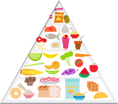

Corrección de las deficiencias en la alimentación
La composición de la dieta tiene una influencia muy importante en el equilibrio nutricional de los ancianos.
En un estudio de intervención alimentar, se verificó que las dietas ricas en vegetales son alcalinas y disminuyen la acidificación de los músculos, retardando la sarcopenia y preservando el funcionamiento de los riñones, mientras que dietas con alto contenido de carne roja son ácidas y pueden acelerar la sarcopenia.
Las proteínas están entre los nutrientes de primera importancia para la salud, en especial el mantenimiento de la calidad de los músculos, representando hasta el 37–39% del total de las proteínas presentes en el cuerpo.
A pesar de que las intervenciones nutricionales son consideradas uno de los pilares del tratamiento de la sarcopenia, la mayoría de los estudios de intervención nutricional se basa en estudios a corto plazo, con suplementos proteicos. Un metanálisis demostró que la ingesta de proteínas promueve el aumento de masa muscular en ancianos y jóvenes, pero en pacientes sarcopénicos una dieta de proteínas aisladamente (sin ejercicios de resistencia), como intervención, no ha sido capaz de aumentar la masa o mejorar la fuerza muscular en cinco estudios revisados por la Iniciativa Internacional en sarcopenia.
